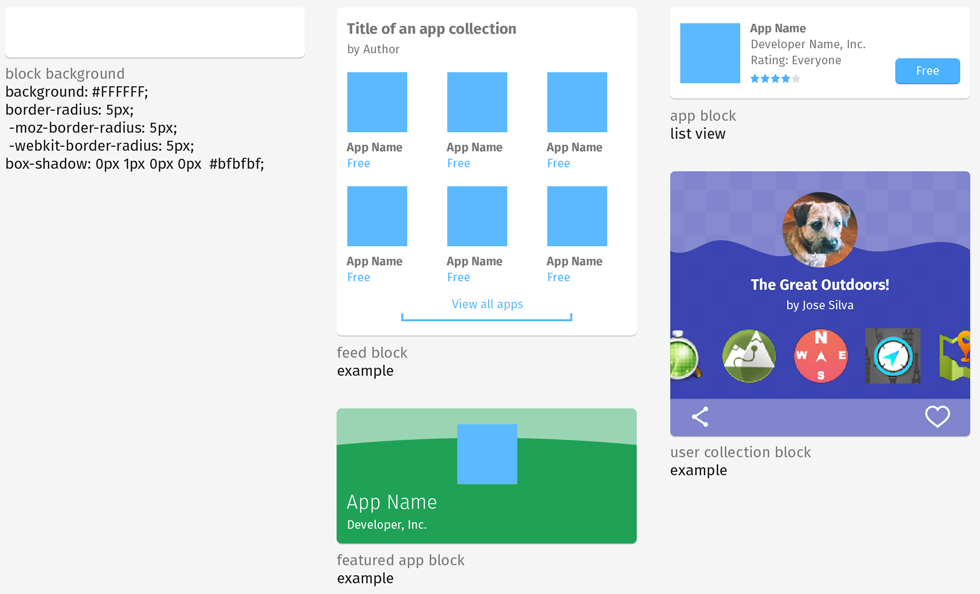

<div class="container">
	<div class="row">
		<div class="col-sm-12 col-md-12 col-lg-12">
		<h1>Blocks</h1>
				<br/>
				<br>
				<p class="longText">Here is a very cursory overview of what is otherwise a very large and sprawling part of Marketplace! Collection blocks appear in The Feed, and adapt based on varying kinds of content. These examples are representative of specific types of blocks. They may have more or less content, or look a bit different, but they are all variations of these pictured.
				</p>
				<br>
		</div>
	</div>
	<!-- Pagination. If you have more than one page, set the multipage variable in the Frontmatter to true. Editing the pagination code happens in /_includes/homePagination.html.
		NOTE: This is currently broken in the Jekyll ver of this template.
		-->
		{% if page.multipage %}
			{% include homePagination.html %}
		{% endif %}
</div>
